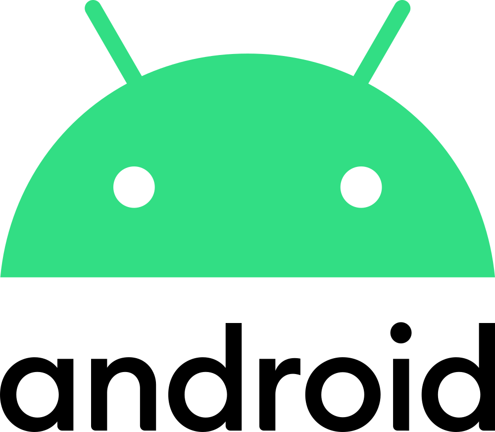
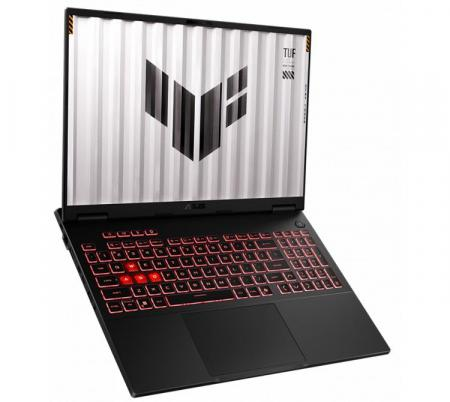
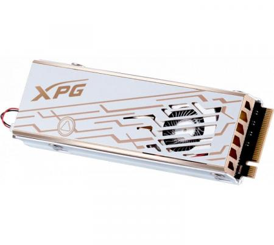
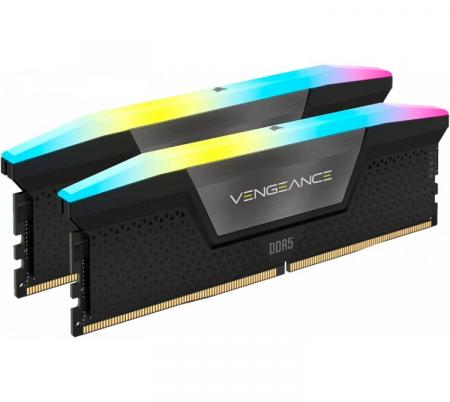
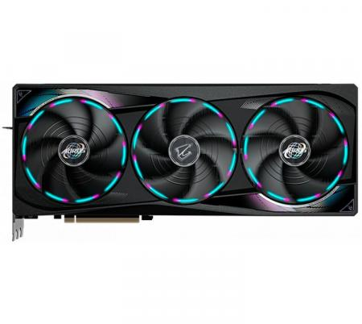
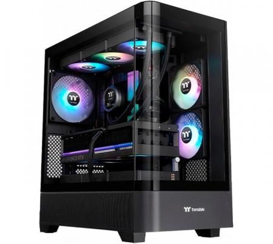
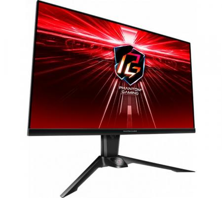
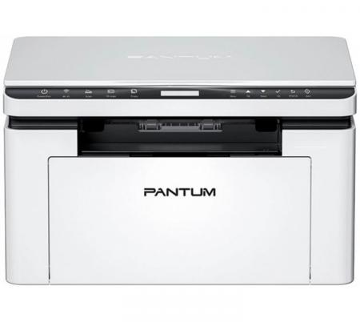
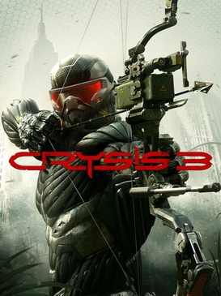
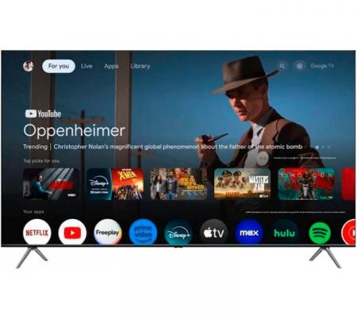

PC & Smartphones
Windows, Linux y Android: instalación, optimización, programas, seguridad y mantenimiento.
Ver servicio ↗Configuración, mantenimiento, recuperación, entretenimiento y soluciones digitales. Un solo lugar para poner tus equipos en condiciones y hacer que funcionen como necesitás.

Desde un problema puntual hasta la puesta a punto completa de tu equipo, Smart TV o consola.
Windows, Linux y Android: instalación, optimización, programas, seguridad y mantenimiento.
Ver servicio ↗Actualización, configuración e instalación de videojuegos, streaming y herramientas.
Ver servicio ↗Configuración de aplicaciones de streaming, videojuegos y entretenimiento.
Ver servicio ↗Contenido, diseño web, edición de video y material para vender en internet.
Ver servicio ↗
Configuración y mantenimiento para que tus dispositivos vuelvan a ser útiles, rápidos y confiables.
Instalación y configuración de componentes para actualizar o mejorar tu equipo.






Configuración de sistemas y aplicaciones para videojuegos y streaming.




Instalación y puesta a punto de aplicaciones para streaming, videojuegos y herramientas.
Recuperación de información personal y copias de seguridad para reducir el riesgo de perder lo que necesitás.
Documentos, fotos, videos y otros archivos personales.
Copias en internet o disco externo.
Eliminación de virus y configuración de seguridad.
Material gráfico, edición de video, diseño web y digital, redacción comercial e impresiones para promocionar productos y servicios en internet y redes sociales.
Quiero mejorar mi presencia digital →Describime el problema con tus palabras. A partir de ahí podemos identificar qué solución corresponde.
Sí. Contame qué está pasando, qué equipo tenés y qué querés conseguir. El diagnóstico inicial orienta la solución.
Sí: PC, Windows, Linux y smartphones Android, además de periféricos y componentes.
Sí. Se realizan actualizaciones, configuraciones e instalaciones de videojuegos, streaming y herramientas.
Sí. Hay servicios de comercio digital, contenido, diseño, video, redacción comercial e impresiones.
Mandame una consulta con el equipo, problema o proyecto que tenés en mente.